|
|
Os
Fenícios
por Vitor Barbosa
Cardoso
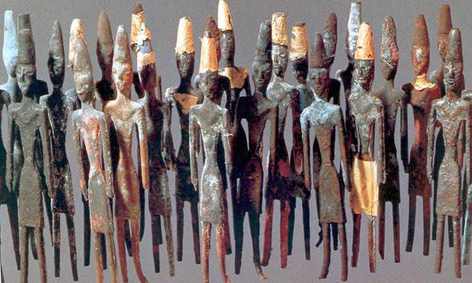
Exemplar da metalurgia
fenícia
Os fenícios, chamados sidônios no Antigo
Testamento, era um povo de origem semita que, por volta de
4.000
a.C. se estabeleceu nas margens orientais do
mediterrâneo. A origem deste povo não é algo muito bem resolvida,
sabe-se que eram semitas provenientes do golfo pérsico, ou da
caldéia. Numa faixa com cerca de 40km, com 200km de extensão, região
que compreende o atual Líbano e parte da Síria, viveram centenas de
anos antes dos hebreus. Eles tinham pele escura, adoravam Baal e
Astartéia. Habitavam uma região montanhosa e com poucas terras
férteis, a pequenez de seu território, a presença de vizinhos
poderosos e a existência de cedro (madeira boa para a construção
naval) nas florestas das montanhas os tornaram exímios navegadores e
pescadores.
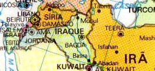
A Fenícia corresponde
onde o Líbano é hoje.
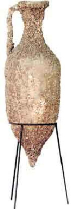No começo, estiveram
divididos em pequenos estados locais, dominados às vezes pelos
impérios da Mesopotâmia e do Egito, dos quais adquiriram boa parte
da sua cultura. Apesar de uma condição submissa, os fenícios
conseguiram desenvolver uma florescente atividade econômica que lhes
permitiu, com o passar do tempo, transformar-se numa das potências
comerciais hegemônicas do mundo banhado pelo Mar Mediterrâneo.
Biblos (futura Jubayl), Sídon (Saída),
Tiro (Sur), Bérito (Beirute), Árado, Ibiza no arquipélago dos
Baleares, Cartagena na costa da Espanha, Cádice, Tangeri eram
algumas das suas cidades, sendo Cartagine no Golfo da Tunísia, sua
cidade principal. O nome Fenícia deriva do grego Phoiníke (terra das
palmeiras). Na Bíblia, parte da região recebe o nome de Canaã,
derivado da palavra semita kena'ani,
"mercador".
Os
fenícios foram influenciados pelas culturas do Egito e da
Mesopotâmia e as estenderam por todo o Mar Mediterrâneo, desde o
Oriente Médio até as costas orientais da Península Ibérica, onde
exploraram o chumbo e a prata.
O legado mais importante
que deixaram foi um alfabeto, que criaram para facilitar o comércio,
o cursivo conhecido como púnica, que deu origem aos caracteres
gregos e latinos. Mas antes dele existia outro que foi perdido
quando da queda de Cartago em 146 a.C., que conduziu o cursivo a
uma expansão e conseqüente perda do idioma original e complexo.
Atribui-se também a esta cultura a invenção da tinta de púrpura e do
vidro. As cidades fenícias foram famosas por sua religião panteísta
e seus templos eram o centro da modelo de ânfora
fenícia
vida
cívica.
Propagaram o uso da
matemática desenvolvida pelos caldeus e pelos egípcios que ainda
trouxeram o conhecimento da astronomia, medicina e geografia.
Aperfeiçoaram a matemática com a introdução do zero, posicionamento
dos algarismos para a determinação dos valores, entre outros, que
eram aplicados principalmente pela atividade
comercial.
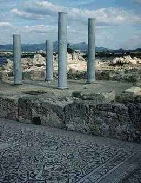
Encontraram-se muitos
vestígios de uma povoação fenícia no sítio arqueológico de Nora, na
ilha da Sardenha. As ruínas fenícias mais antigas datam do século
VII a.C.
Os fenícios foram os maiores navegadores
do mundo antigo. Com audácia, perícia e 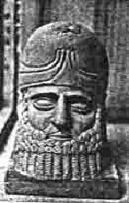grandes galeras,
percorreram o mar Mediterrâneo, atingiram o Atlântico e viajaram em
torno da África.
Aliando vocação marítima com habilidade
comercial, fundaram importantes colônias, como Cartago.
Estatua
fenícia
Entre os fatores que favoreceram o
sucesso comercial e marítimo da
Fenícia, podemos destacar que a região era muito encruzilhada de
rotas comerciais, o escoadouro natural das caravanas de comercio que
vinham da Ásia em direção ao Mediterrâneo; costa bem recortada com
bons portos e baías, a situação do país entre a Europa e a África,
além das condições do Mediterrâneo para navegação. Não há nesse mar
tempestades no verão; são numerosas as ilhas, que serviam como ponto
de referência, dispensando a orientação por estrelas e a
transparência do ar que permitia avistar a quilômetros se haviam
acidentes geográficos, como cabos e montanhas.
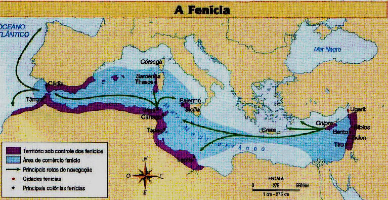
Possuía bons portos naturais em suas
principais cidades (Ugarit, Biblos, Sidon e
Tiro).
Tinha praias repletas de um molusco
(múrice), do qual se extraía a púrpura, corante de cor vermelha
utilizando para o tingimento de tecidos, muito procurados entre as
elites de diversas regiões da Antiguidade.
O
povo fenício, bem antes de o povo romano entrar na
Inglaterra, por lá esteve para comprar estanho e couro dos antigos
bretões.
Por
volta de 1500
a.C. tiveram grande êxito em seus negócios,
pois praticavam comércio intenso tanto por terra quanto por
mar.
Foram
responsáveis pela construção de portos
comerciais e colônias
em praias distantes, como: Cádiz, na Espanha,
e Cartago, localizada ao norte da África.
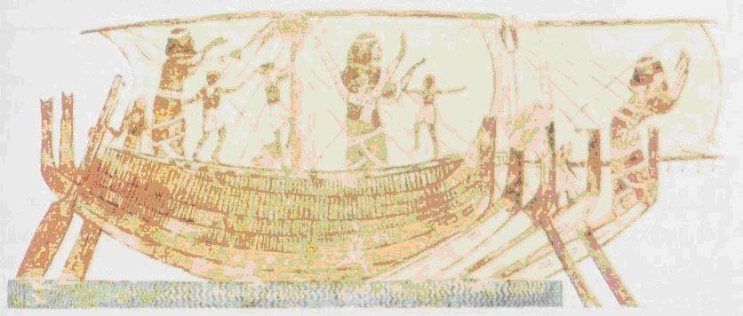
Navio
mercante fenício
Na história existiu outros grandes
conquistadores como, por exemplo, os babilônios, assírios
e persas; entretanto, estes não foram capazes de conquistar a mesma
riqueza dos
fenícios, contudo, o Império Romano
absorveu o
seu bem sucedido sistema de comércio marítimo.
A Fenícia era, na verdade, um conjunto de
Cidades-Estado, independentes entre si. Algumas adotavam a Monarquia
Hereditária; outras eram governadas por um Conselho de Anciãos. As
cidades fenícias disputavam entre si e com outros povos, o controle
das principais rotas do comércio marítimo.
A
economia dos fenícios desde cedo evoluiu da pesca e da agricultura para uma economia
mercantil, pois as escassas terras férteis da Fenícia não permitiam
uma produção agrícola capaz de atender às necessidades da população.
O comércio marítimo foi sua principal atividade econômica e suas rotas
comerciais marítimas se estenderam por todo o mar mediterrâneo.
Alfabeto
fenício
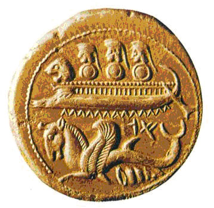
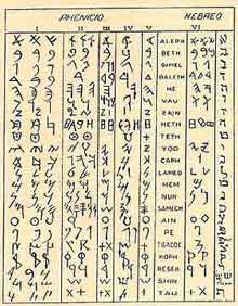
Moeda
fenícia de prata
O que levou os fenícios a criarem o
alfabeto foi justamente a necessidade de controlar e facilitar o
comércio. O alfabeto fenício possuía 22 letras, apenas consoantes, e era,
portanto, muito mais simples do que a escrita cuneiforme e a
hieroglífica. O alfabeto fenício serviu de base para o alfabeto
grego.
Construíram
frotas numerosas e poderosas. Visitaram as costas do norte da África
e todo o sul da Europa, comerciaram na Itália, penetraram no ponto
Euxino (mar Negro) e saíram pelas Colunas de Hércules (Estreito de
Gibraltar), tocando o litoral atlântico da África e chegando até as
ilhas do Estanho (Inglaterra). Comerciando sempre, construíram
entrepostos e armazéns ao longo de suas rotas. Quando podiam
saqueavam e roubavam, mas evitavam os inimigos poderosos, que
preferiam enfraquecer mais pelo ouro do que pela espada. Seus
agentes e diplomatas não eram estranhos a quase todas as guerras
travadas na época, e delas tiravam bom proveito. Fizeram o périplo
africano, seguindo em sentido inverso ao caminho que percorreria
Vasco da Gama muito mais tarde. E as provas se acumulam para
confirmar que atravessaram o Atlântico e visitaram o novo
continente. Os fenícios navegavam utilizando a técnica de orientação
pelas estrelas, pelas correntes marinhas e pela direção dos ventos,
e seguindo esses indícios seus capitães cobriam vastas distâncias
com precisão. Já eram influentes por volta do ano
2000
a.C., mas seu poder cresceu com Abibaal
(1.020
a.C.) e Hirã (aliado de Salomão).
Biblos, Sidon e Tiro foram sucessivamente capitais de um império
comercial de cidades unidas antes pelos interesses, costumes e
religião do que por uma estrutura política mais
rígida.

As setas em torno da África representam as navegações
realizadas pelos fenícios.
Cartago,
a maior das colônias da Fenícia, sobreviveu e prosperou até herdar
da antiga metrópole o comércio pelo mar. É Heródoto que nos conta
que "o Senado de Cartago baixou decreto proibindo sob pena de morte
que se continuassem fazendo viagens para esse lado do Atlântico"
(Américas) "já que a contínua vinda de homens e de recursos estava
despovoando a capital".
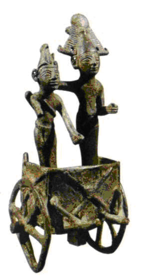
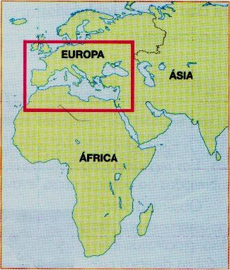
Civilização
fenícia
A Fenícia hoje
LINHA DO TEMPO
|
Datas
|
Importantes
marcos históricos
|
|
2750 a.C.
|
Fundadores
de Tiro, de acordo com Heródoto. |
|
2000
a.C. (cerca de) |
As
Taaut ou Thoth Hermes inventou o primeiro alfabeto.
|
|
1700
(cerca de) |
Cadmus
apresenta o alfabeto para os gregos.
|
|
1590 a.
C. |
Os
fenícios cananeus são orientados a como lutar contra os
egípcios. |
|
1500
(cerca de) |
Os
fenícios liquidam Chipre. |
|
1300 a.
C. |
Eles
fazem tratados comerciais com o Egito.
|
|
1260
(cerca de) |
Sanchuniathon,
sacerdote e escritor
fenício ficou conhecido no mundo antigo.
|
|
1250
(cerca de) |
Posidonius
o nome estóico de Mochus de Sidon, deu origem a teoria
atômica. |
|
1252 a.
C. |
Guerra
de Sidon contra os filisteus, e possível devastação de Sidon.
|
|
1200 a.
C. |
Tiro
torna-se a principal cidade Fenícia no momento em que as
guerras começam em Tróia. |
|
1100 a.
C. |
Cádiz
e outras colônias fundadas na costa atlântica.
|
|
1020 a.
C. |
Abibal,
o mais conhecido rei de Tiro. |
|
980 a.
C. |
Hirão
venceu Abibal, formou aliança com reis David e Salomão,
e enviou ricas expedições comerciais a Jerusalém.
|
|
970
(cerca de) |
rei
de Tiro, constrói o Templo de Salomão. |
|
876 a.
C. |
fenícias
são tributárias da Assíria. |
|
860
(cerca de) |
Jezebel,
princesa de Tiro, casa com Acabe, rei de Israel.
|
|
854 a.
C. |
Fenícia
derrotada pelos assírios. |
|
727 a.
C. |
Luliya
de Tiro afirma a sua independência e Fenícia é devastado pela
Assíria. |
|
725 a.
C. |
Tiro
tem vitórias contra os Assírios e acontece a primeira batalha
naval da história. |
|
701 a.
C. |
Luli,
rei de Sidon, abandonou sua cidade para Senaqueribe da Assíria
e fugiu para Chipre, onde pereceu. |
|
695 a.
C. |
Colônias
fenícias na Espanha tornam-se independentes do reino fenício.
|
|
678 a.
C. |
Sidon
cercado por três anos é capturado pelos assírios.
|
|
636 a.
C |
Cidades
fenícias escapam fragilizadas do império assírio.
|
|
600 a.
C. |
Tales
de Mileto, fenício tornou-se conhecido como o primeiro
filósofo, cientista e matemático. |
|
587 a.
C. |
Nabucodonosor
durante treze anos fez seu grande cerco a Tiro. A cidade
finalmente cede. |
|
585 a. C.
|
Thales,
fenício de Citium fez previsão sobre o eclipse solar do ano.
|
|
570
(cerca de) |
Pitágoras,
matemático e cientista fenício era formado nos mistérios da
religião dos templos da Fenícia. |
|
538 a. C.
|
A
Fenícia torna-se uma província persa; Cartago afirma a sua
independência. |
|
536 a.
C. |
A
unidade dos cartagineses gregos a partir de Córsega.
|
|
509 a.
C |
Cartago
reconhecida por Roma como governante do mar ocidental.
|
|
500
(cerca de) |
Hanno
realiza a circunavegação do continente africano.
|
|
510
(cerca de) |
Himilco,
cartagines viajante, o primeiro marinheiro conhecido que tenha
navegado desde o Mediterrâneo até a costa noroeste da Europa.
|
|
440
(cerca de) |
Heródoto,
o historiador grego, visitou e escreveu sobre a Fenícia.
|
|
480 a.
C. |
Os
navios fenícios sob domínio persa são derrotados pelos gregos
em Salamina. |
|
397
a.C. |
O
Africano reprime a revolta contra Cartago.
|
|
332
a.C. |
Tiro
cercado por Alexandre, o Grande é invadida.
|
|
306 a.C.
(cerca de) |
Zenão
de Citium, filósofo estóico, tornou-se conhecido pela sua
obra. |
|
276
a.C. |
Cartago
finalmente conquista a Sicília. |
|
264
a.C.
|
Cartago
começa a sua primeira guerra com os romanos é o início
das Guerras Púnicas. |
|
260
a.C. |
A
frota cartaginês foi derrotada pelo Mylae.
|
|
256
a.C. |
A
frota cartaginesa
foi derrotada pela segunda vez em Ecnomus; os romanos invadem
a África, mas são derrotados e o seu exército recua.
|
|
248
a.C. |
Hamilcarl
repetidamente derrota os romanos em pequenas batalhas na
Sicília. |
|
237
a.C. |
Hamilcar
esmaga os mercenários. |
|
236
a.C. |
Hamilcar
começa a construção de um império entre as cidades fenícias da
Espanha. |
|
228
a.C. |
Asdrúbal
vençe Hamilcar e continua o seu trabalho na Espanha.
|
|
219
a.C. |
Anibal
(filho de Hamilcar) vença Asdrúbal e desafia os
romanos. |
|
218
a.C. |
Aníbal
atravessa os Alpes em Itália com repetidas vitórias.
|
|
216
a.C. |
Anibal-chefe
da vitória em Cannae; os romanos já não se atrevem a
combatê-lo em campo. |
|
211
a.C. |
Anibal
cerca Roma, mas abandona o cerco .
|
|
209
a.C. |
Os
romanos são vitoriosos na Espanha.
|
|
207
a.C. |
Um
segundo exército cartaginês, tendo atravessado os Alpes, é
derrotado na Metaurus. |
|
204
a.C. |
Os
romanos invadem África. |
|
203
a.C. |
Anibal
defende Cartago.
|
|
202
a.C. |
Ele
foi derrotado em Zama. |
|
201
a.C. |
Cartago
submete-se a Roma. |
|
198
a.C. |
Tiro
chegou ao abrigo da regra do Seleucidas.
|
|
183
a.C. |
Morte
de Anibal. |
|
149
a.C. |
Os
cartagineses deixam sua cidade, pois eles resistiram a
dois anos de cerco. |
|
146
a.C. |
Queda
de Cartago e final das Guerras Púnicas.
|
|
130
a.C. |
Zenão
de Sidon, o filósofo, escreveu sobre lógica, teoria atômica,
biologia, ética, estilo literário, oratória, a poesia, a
teoria do conhecimento, bem como a matemática, assim como o
comentário do filósofo Epicuro. |
|
126
a.C. |
Tiro
obtenção de auto-governo Seleucidas.
|
|
29
a.C. |
Uma
colônia romana reconstrói Cartago no reinado do imperador
Augusto César, e ela se torna uma grande cidade.
|
|
27
d.C. (cerca de) |
Jesus
Cristo visitou Sidon |
|
35
d.C. (cerca de) |
São
Pedro, Paulo e outros Apóstolos visitam e consagram bispos
fenícios. |
|
40
d.C. (cerca de)
|
John
Mark Byblos designado pelo Bispo de São Pedro
|
|
45
d.C. (cerca de)
|
José
de Arimatéia viajou para a Grã-Bretanha.
|
|
100
|
Philo
de Byblos, escritor, tornou-se conhecido pela sua tradução
literária especialmente as realizações dos trabalhos dos
Sanchuniathon a Priest. |
|
140
|
Papinian,
jurista na famosa Berytus Faculdade de Direito e autor de
várias obras importantes. |
|
155
|
O
fenício Anicitus se tornou Papa. |
|
203
|
Sts.
Perpétua e Felicidade, mártires cristãs, de Cartago cumprem a
sua morte. |
|
237
|
Barbara
de Heliópolis, mártir cristão, cumprir a sua morte
|
|
250
|
Pórfiro
Malchus de Tiro, o matemático e discípulo de Plotinus, revista
e editada das suas obras. |
|
253
|
Orígenes
morreu ali em Tiro como consequência de torturas que ele
sofreu sob Decius, e foi sepultado na igreja catedral.
|
|
311
|
Um
decreto municipal foi emitido proibindo cristãos a permanecer
na cidade de Tiro. |
|
335
|
O
primeiro conselho de Tiro, convocada pelo Constantino, julgada
a causa de Santo Atanásio, deposto e ele.
|
|
400
|
Santo
Jerônimo visita Tiro quando se tornou a capital da Fenícia e
foi a maior e mais rica cidade comercial da província. Sua
fábrica de pano roxo, sobretudo, na era do Império.
|
|
425
|
Prima
Fenícia foi subdividida em duas províncias, Fenícia Marítima e
Fenícia Libanensis
|
|